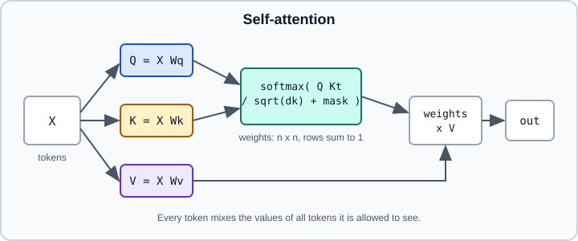

Attention & Transformers: the Bridge to LLMs
|
This content was generated with the assistance of AI and should be verified against the official documentation before being relied on in production. |
Attention lets a model decide, for each position in a sequence, which other positions to read from and how much. It started as an add-on to recurrent seq2seq models, then became the only mechanism needed: the transformer is a stack of attention and feed-forward blocks with no recurrence and no convolution. This page is deliberately short. It explains the idea and the maths well enough to read model code and to use the framework building blocks; the full architecture of modern large language models (RMSNorm, rotary positions, grouped-query attention, mixture of experts) lives in the AI section: Transformer Architecture, Tokens & Tokenization and What Is an LLM?.
Code targets Python 3.13, PyTorch 2.15 and Keras 3.15 (TensorFlow 2.21 backend), checked against their documentation on 2026-10-30. Examples were run on Python 3.13 with NumPy, PyTorch 2.15 (CPU) and Keras 3.15 on TensorFlow 2.21 on 2026-11-01. The previous page, RNNs, LSTMs & GRUs, explains the limits that motivated attention.
Attention as a soft lookup
A Python dictionary maps a key to a value: you give a query, the dictionary returns the value whose key matches exactly. Attention is the differentiable version. A query is compared with every key, the similarities are turned into weights that sum to 1, and the result is the weighted average of the values. A near-match contributes a lot, a poor match almost nothing, and everything is smooth, so gradients flow to the queries, keys and values.
Scaled dot-product attention
Stack the queries of all positions into a matrix \(Q\) (shape n_q x d_k), the keys into \(K\) (n_k x d_k) and the values into \(V\) (n_k x d_v). Then:
\[ \operatorname{Attention}(Q, K, V) = \operatorname{softmax}\left(\frac{Q K^{\top}}{\sqrt{d_k}} + M\right) V \]
-
\(Q K^{\top}\) holds the dot-product similarity of every query with every key: an
n_q x n_kmatrix. -
The division by \(\sqrt{d_k}\) keeps the scores from growing with the dimension. If query and key entries have unit variance, a dot product has variance \(d_k\); without scaling the softmax saturates, one weight becomes almost 1 and gradients vanish.
-
\(M\) is an optional mask: \(0\) where attention is allowed and \(-\infty\) where it is not, so those positions get weight exactly 0 after the softmax.
-
The softmax is applied along the key axis, so each query’s weights sum to 1.
The cost is the n_q x n_k score matrix: time and (naively) memory grow quadratically with sequence length, which is the central cost of transformers and the reason long-context work uses fused kernels and cache tricks.
A runnable NumPy version
import numpy as np
def softmax(z, axis=-1):
z = z - z.max(axis=axis, keepdims=True) # numerical stability
e = np.exp(z)
return e / e.sum(axis=axis, keepdims=True)
def attention(Q, K, V, causal=False):
d_k = Q.shape[-1]
scores = Q @ K.T / np.sqrt(d_k)
if causal: # block attention to later positions
mask = np.triu(np.ones_like(scores, dtype=bool), k=1)
scores = np.where(mask, -np.inf, scores)
weights = softmax(scores)
return weights @ V, weights
rng = np.random.default_rng(0)
X = rng.standard_normal((4, 8)) # 4 tokens, 8 features
Wq, Wk, Wv = (rng.standard_normal((8, 8)) for _ in range(3))
out, weights = attention(X @ Wq, X @ Wk, X @ Wv, causal=True)
print(out.shape) # (4, 8)
print(weights.sum(axis=-1)) # [1. 1. 1. 1.]
print(np.round(weights, 2)) # lower-triangular: token i sees only tokens 0..iSource: Vaswani et al.: Attention Is All You Need and Dive into Deep Learning: Attention scoring functions
The first row of the printed weights is always [1, 0, 0, 0]: with a causal mask the first token can only attend to itself.
Self-attention and cross-attention
In self-attention the queries, keys and values all come from the same sequence \(X\), each through its own learned projection: \(Q = X W_Q\), \(K = X W_K\), \(V = X W_V\). Every position can read from every other position in a single step, so the path length between any two tokens is 1, compared with the distance between them in an RNN. In cross-attention the queries come from one sequence (the decoder) and the keys and values from another (the encoder output); this is the learned alignment of the original attention-based translation models, now inside a transformer decoder.

Masks
Three kinds of mask appear in practice:
-
Padding mask. Positions that are padding in a batch are blocked as keys so no token attends to them.
-
Causal mask. For autoregressive generation (language models, decoders) position \(i\) may attend only to positions \(\le i\). Without it a model trained with teacher forcing would simply copy the next token from its input.
-
Custom masks. Sliding windows, block-sparse patterns and document-packing masks for efficient long-context training. PyTorch’s FlexAttention lets you express them as small Python functions.
Multi-head attention
One attention operation produces one weighting per query. Multi-head attention runs \(h\) attentions in parallel, each in a lower-dimensional subspace, and concatenates the results:
\[ \operatorname{head}_i = \operatorname{Attention}(X W_Q^{(i)}, X W_K^{(i)}, X W_V^{(i)}), \qquad \operatorname{MHA}(X) = \operatorname{Concat}(\operatorname{head}_1, \dots, \operatorname{head}_h)\, W_O \]
With model width \(d_{model}\) and \(h\) heads, each head typically uses \(d_k = d_{model}/h\), so the cost matches a single full-width head. Different heads can specialise (adjacent tokens, a syntactic relation, a delimiter), though individual heads are rarely cleanly interpretable. Variants used in LLMs (multi-query and grouped-query attention, which share key/value heads to shrink the inference cache) are described in Transformer Architecture.
Position information
Attention treats its input as a set: permute the tokens and the outputs permute the same way. Order must be injected. The original paper added fixed sinusoidal vectors to the embeddings; many models learn absolute position embeddings; most current LLMs rotate queries and keys by position-dependent angles (RoPE) so that scores depend on relative offsets. A recurrent model needs none of this because order is built into the recurrence. Details are in the AI section’s positional encoding and RoPE section.
The transformer block
A block wraps attention with a position-wise feed-forward network (two linear layers with a non-linearity, applied independently to each token), residual connections and normalisation:
This is the pre-norm arrangement used by most current models (the original paper normalised after the residual addition, "post-norm", which is harder to train deep). Stacking such blocks gives:
-
Encoder-only models (BERT family): bidirectional self-attention, good for classification, tagging and embeddings. See Embeddings & Representation Learning.
-
Decoder-only models (GPT family, most LLMs): causal self-attention, trained to predict the next token.
-
Encoder-decoder models (T5, original transformer, many speech models): encoder self-attention plus decoder self-attention and cross-attention.
Vision transformers apply the same blocks to image patches (see Convolutional Neural Networks); how such models are adapted is the subject of Transfer Learning & Foundation Models.
PyTorch building blocks
PyTorch offers three levels. For a custom model, use the functional kernel torch.nn.functional.scaled_dot_product_attention (SDPA). It computes the formula above and dispatches to a fused implementation (FlashAttention-style, memory-efficient, cuDNN or a plain math fallback) depending on the hardware, dtype and mask; you do not select the backend yourself unless you override it with torch.nn.attention.sdpa_kernel.
import math
import torch
import torch.nn.functional as F
from torch import nn
class SelfAttention(nn.Module):
"""Multi-head causal self-attention built on F.scaled_dot_product_attention."""
def __init__(self, d_model: int, n_heads: int, dropout: float = 0.0):
super().__init__()
assert d_model % n_heads == 0
self.n_heads = n_heads
self.qkv = nn.Linear(d_model, 3 * d_model, bias=False)
self.proj = nn.Linear(d_model, d_model, bias=False)
self.dropout = dropout
def forward(self, x: torch.Tensor) -> torch.Tensor: # x: (batch, seq, d_model)
b, t, c = x.shape
q, k, v = self.qkv(x).chunk(3, dim=-1)
# (batch, seq, d_model) -> (batch, heads, seq, head_dim)
q, k, v = (z.view(b, t, self.n_heads, c // self.n_heads).transpose(1, 2) for z in (q, k, v))
y = F.scaled_dot_product_attention(
q, k, v,
dropout_p=self.dropout if self.training else 0.0,
is_causal=True, # built-in causal mask
)
y = y.transpose(1, 2).contiguous().view(b, t, c)
return self.proj(y)
class Block(nn.Module):
def __init__(self, d_model: int, n_heads: int):
super().__init__()
self.ln1 = nn.LayerNorm(d_model)
self.attn = SelfAttention(d_model, n_heads)
self.ln2 = nn.LayerNorm(d_model)
self.mlp = nn.Sequential(nn.Linear(d_model, 4 * d_model), nn.GELU(),
nn.Linear(4 * d_model, d_model))
def forward(self, x):
x = x + self.attn(self.ln1(x)) # pre-norm residual
return x + self.mlp(self.ln2(x))
x = torch.randn(2, 16, 64)
print(Block(64, 4)(x).shape) # torch.Size([2, 16, 64])Notes on the call: is_causal=True and an explicit attn_mask are mutually exclusive; a boolean attn_mask marks positions that take part in attention with True; and enable_gqa=True allows fewer key/value heads than query heads. nn.MultiheadAttention (with batch_first=True to use (batch, seq, embed)) and nn.TransformerEncoderLayer / nn.TransformerDecoderLayer are higher-level modules; their masks follow different conventions (for nn.MultiheadAttention a boolean attn_mask of True means not allowed), so read the documentation before mixing them with SDPA. For masks beyond causal and padding, FlexAttention (torch.nn.attention.flex_attention) compiles a user-defined score or mask function into a fused kernel and is meant to be used with torch.compile.
Older tutorials hand-write attention with explicit softmax(q @ k.T). That still works and is clearer for teaching, but it materialises the whole score matrix; prefer SDPA in real code.
Keras building blocks
keras.layers.MultiHeadAttention takes num_heads and key_dim (the size per head) and is called with the query and value (and optionally key) tensors:
import numpy as np
import keras
from keras import layers
x = keras.Input(shape=(None, 64)) # (batch, seq, features)
attn = layers.MultiHeadAttention(num_heads=4, key_dim=16)
y = attn(query=x, value=x, key=x, use_causal_mask=True) # causal self-attention
y = layers.LayerNormalization()(x + y) # residual + norm (post-norm)
ff = layers.Dense(256, activation="gelu")(y)
ff = layers.Dense(64)(ff)
out = layers.LayerNormalization()(y + ff)
model = keras.Model(x, out)
print(model.predict(np.random.rand(2, 10, 64).astype("float32"), verbose=0).shape) # (2, 10, 64)Source: Keras: MultiHeadAttention layer
Masks produced upstream by Embedding(mask_zero=True) are combined automatically with the causal mask. For pre-trained transformers and tokenisers in Keras, use KerasHub (keras_hub, still pre-1.0), the successor to KerasNLP; KerasCV was archived in March 2026. Pre-trained encoder and decoder models in the PyTorch ecosystem are usually obtained through Hugging Face (see Transformers pipelines).
Costs and how they are managed
-
Quadratic memory and time in sequence length. Fused kernels (FlashAttention and relatives) avoid materialising the score matrix and are chosen automatically by SDPA; they do not change the quadratic compute.
-
Inference cache. Autoregressive decoding stores the keys and values of every earlier token (the KV cache); grouped-query attention shrinks it.
-
Data hunger. Transformers have weaker built-in assumptions than CNNs or RNNs, so they usually need more data or pre-training; see Transfer Learning & Foundation Models.
-
Training stability. Pre-norm, warm-up and gradient clipping are standard; see Optimizers & Learning Rate Schedules.
Where to go next
For the full decoder-only architecture, tokenisation, sampling and long-context behaviour, continue in the AI section starting from Transformer Architecture. For how attention models produce reusable vector representations, continue with Embeddings & Representation Learning.